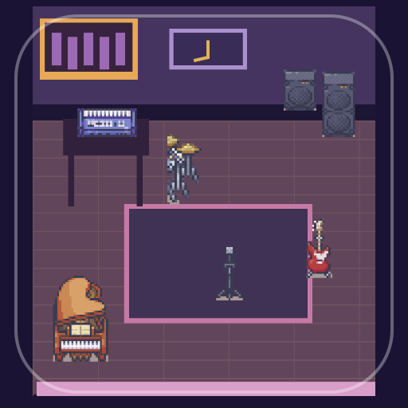

<- all projects

Afterhours Records
PC
Volume
Live
Make beats in a pixel studio, work with collaborators and build an independent music career.
A bedroom studio and a box of unfinished demos. Write short loops on a step sequencer, find your people and decide what success sounds like as you reopen a neighborhood record label. Compose audible loops on a four-track, 16-step sequencer with kick, snare, hat and synth, and shape tempo and mix across eight styles, from lo-fi and house to synthwave and drum & bass. Read 24 collaborator briefs and pick the direction that fits, then release independently to keep your rights or take a label advance. There are 48 sessions, five story chapters, studio gear to upgrade and a catalog of every loop you release.